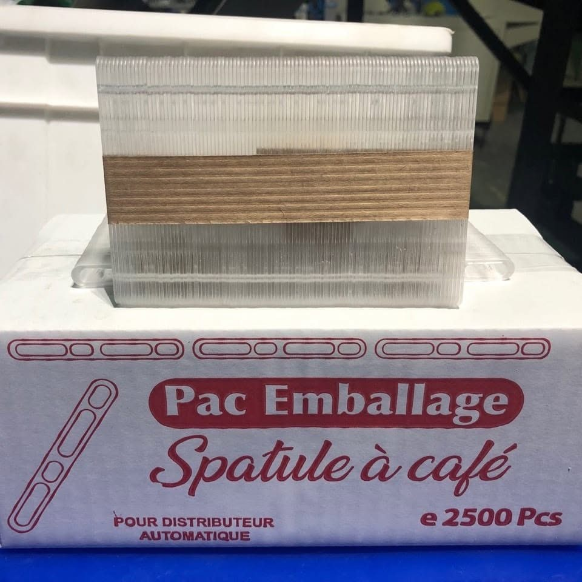
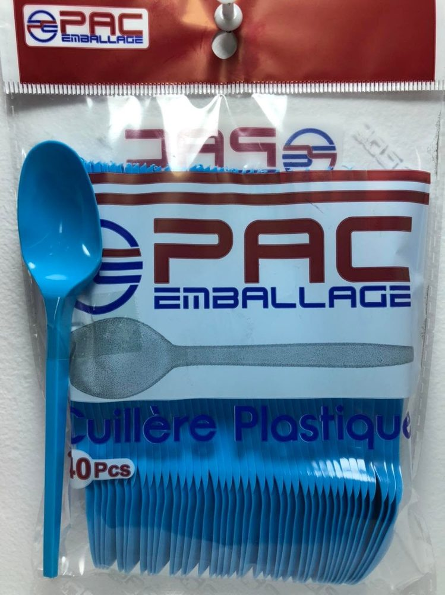
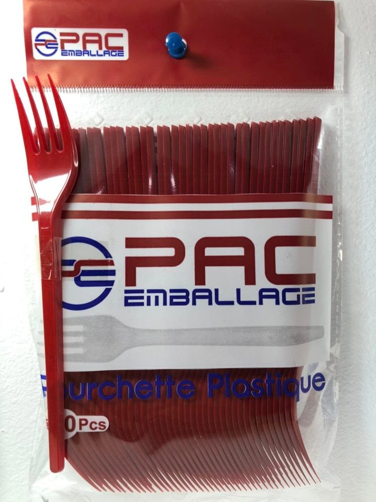
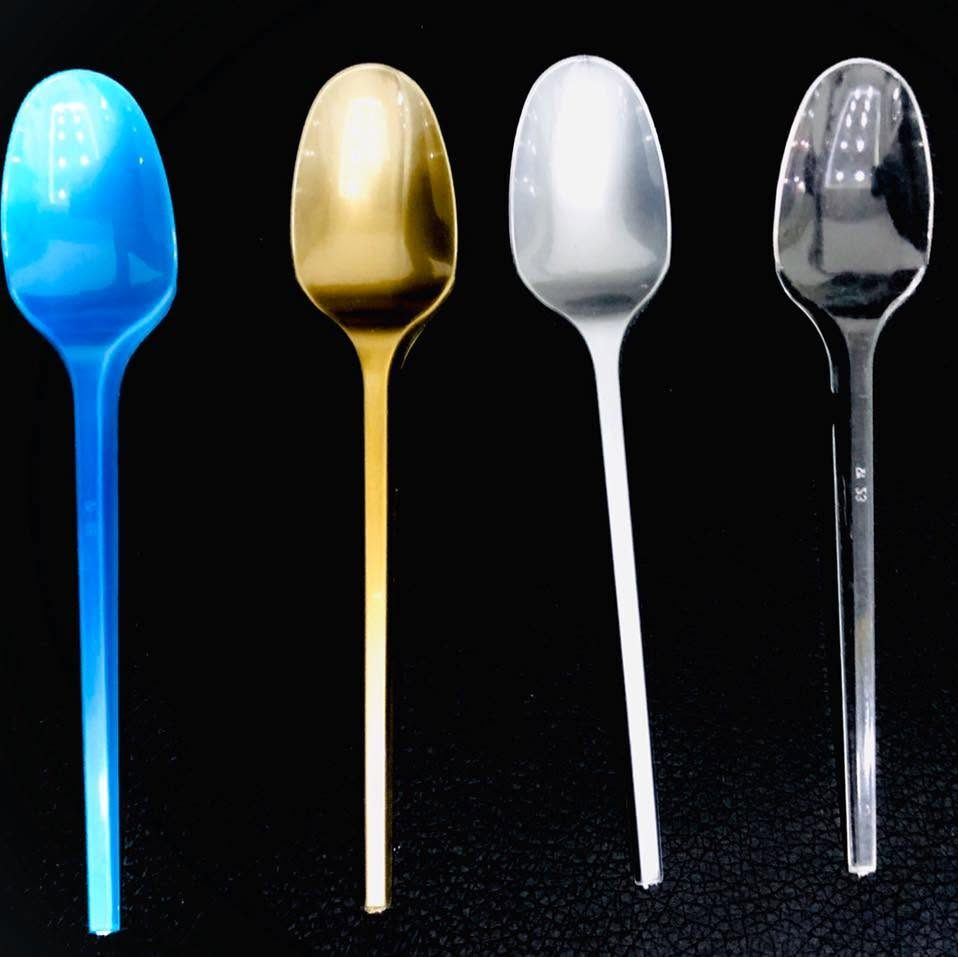
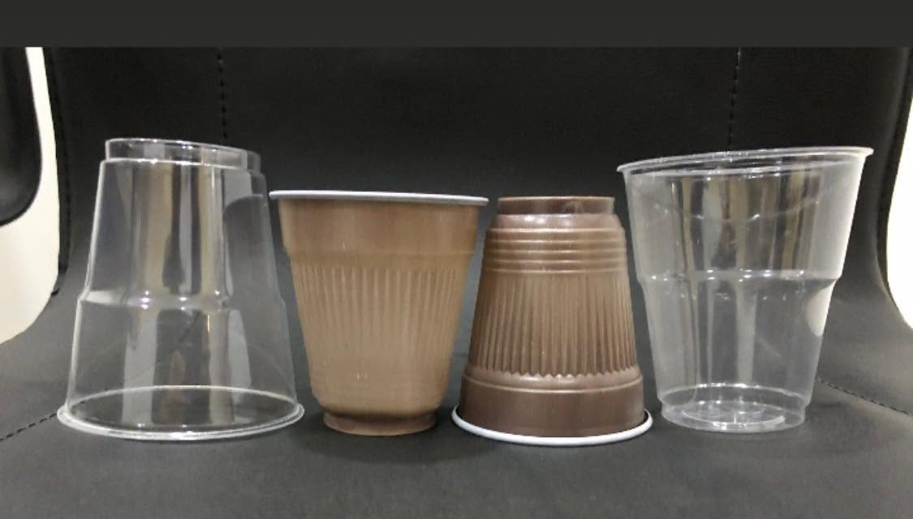
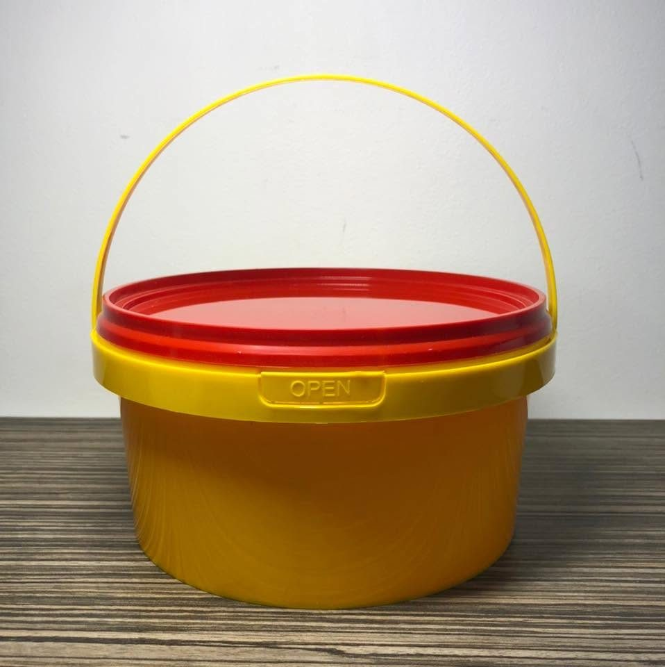
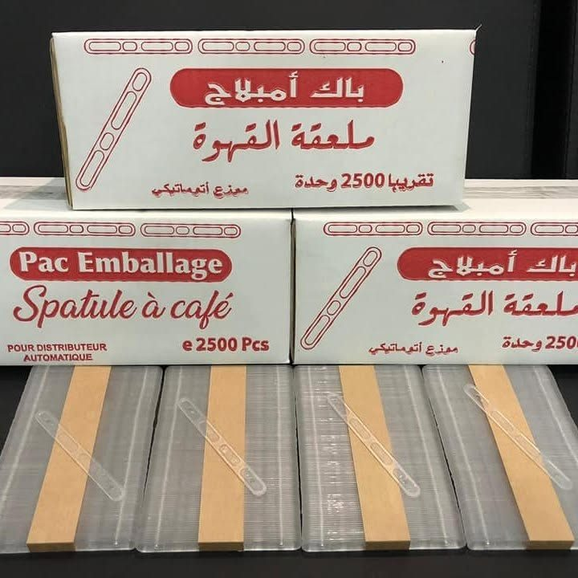
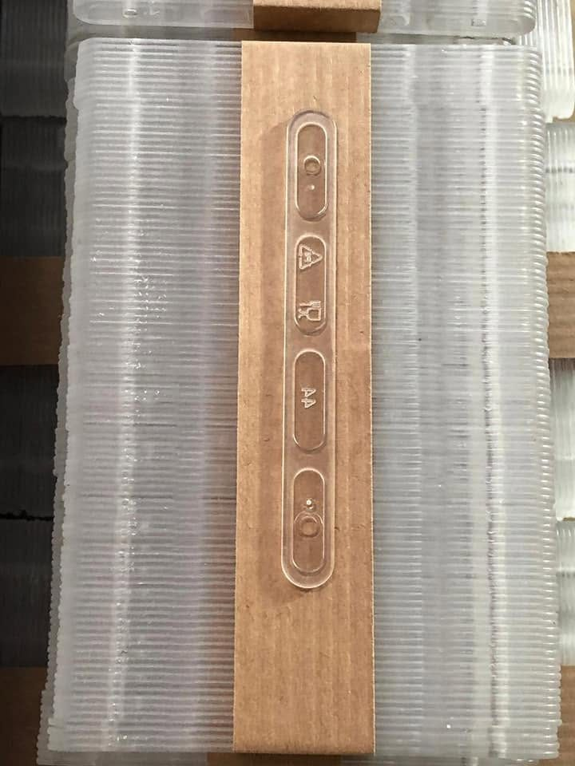
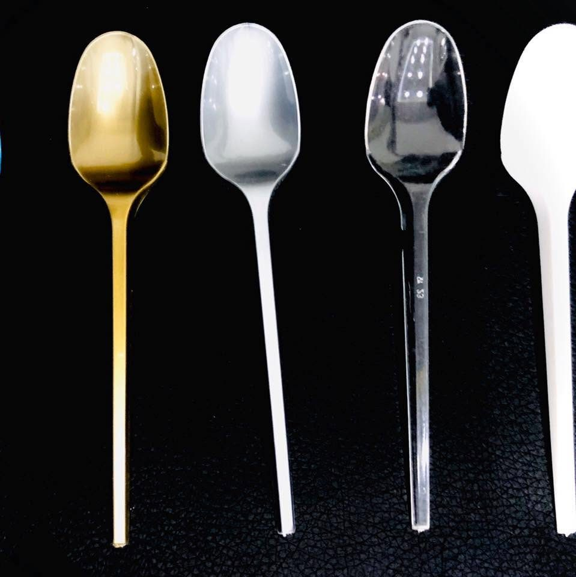
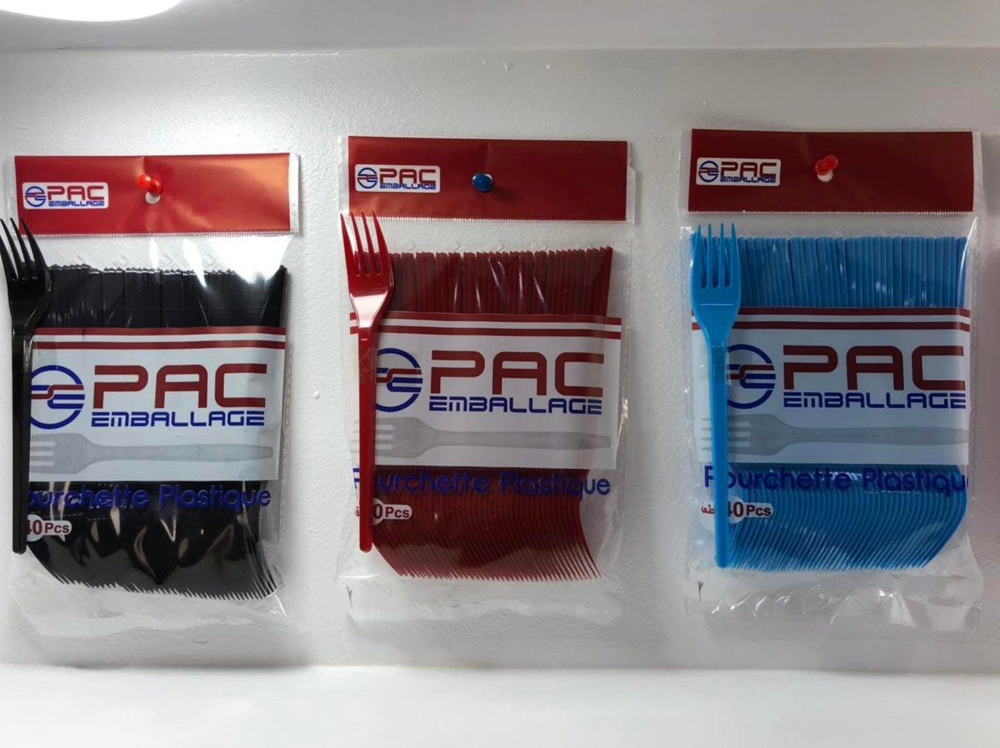

PAC Emballage produit les consommables des distributeurs automatiques, des cafés, des traiteurs et des grossistes : une qualité régulière, des prix fabricant et un conditionnement prêt à l'emploi.



La spatule des distributeurs automatiques : 90 mm, en sachets de 100 et cartons de 2 500.
Voir la ficheCuillère à usage unique en sachet de 40 pièces, en blanc, bleu, rouge, rose ou bleu cristal.
Fourchette à usage unique en sachet de 40 pièces, en blanc, bleu, rouge ou rose.

FinitionsCuillères finition or, argent ou cristal pour les tables de réception et les traiteurs.
Voir la fiche
Café & eauGobelets transparents et gobelets couleur café pour boissons froides et chaudes.
Voir la fiche
ContenantSeau alimentaire avec anse et couvercle, pour la conservation et le transport.
Voir la fiche

Spatule en plastique alimentaire conçue pour les distributeurs automatiques de boissons chaudes. Longueur 90 mm, emballée par 100 dans des sachets et livrée en cartons de 2 500 pièces, prête à charger dans les machines.
Cuillères et fourchettes PAC Emballage existent en plusieurs coloris pour s'accorder à votre enseigne, à vos menus ou à vos événements. Chaque sachet porte la marque et la mention du produit.
Voir les couvertsDes matières adaptées au contact alimentaire, pour vos boissons chaudes comme pour vos plats.
Une usine à Baba Ali : des délais courts et un interlocuteur direct pour vos commandes.
Le prix fabricant, sans intermédiaire, pour les volumes des distributeurs et des grossistes.
Sachets de 40 ou de 100, cartons de 2 500 : des formats prêts à stocker et à revendre.
Spatules 90 mm et gobelets prêts à charger, en cartons de 2 500.

Couverts en sachets de 40 pour la vente à emporter.

Cuillères premium or, argent et cristal pour vos tables.

Sachets de marque prêts pour le rayon, prix fabricant.
Indiquez le produit et la quantité : nous vous répondons avec un devis fabricant.